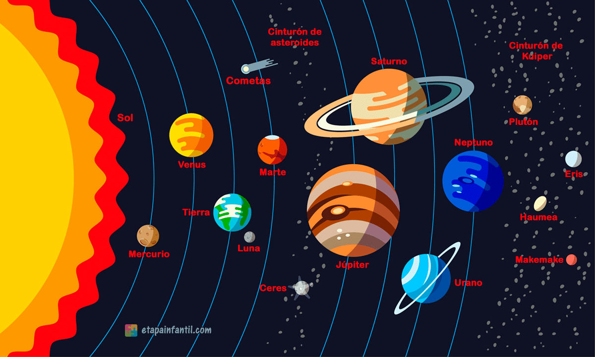

Orientaciones
INTRODUCCIÓN
¡Bienvenidos al emocionante mundo del sistema solar! Estamos encantados de presentarles este recurso, diseñado especialmente para ustedes, el cual los aventura a explorar nuestro sistema solar. A través de animaciones, videos y actividades interactivas, descubrirán los secretos de los planetas, las estrellas y mucho más. Prepárense para un viaje educativo inolvidable mientras desentrañan los misterios de nuestro universo. ¡Vamos a comenzar!
Sistema Solar
